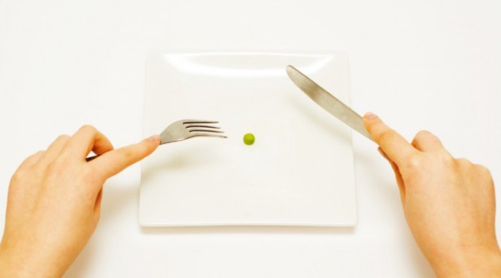

Anorexia, O que é e Seus Sintomas
O Que é?
A anorexia é um distúrbio alimentar que provoca uma perda de peso acima do que é considerado saudável para a idade e altura. Pessoas com anorexia podem ter um medo intenso de ganhar peso, mesmo quando estao abaixo do peso normal. Elas podem abusar de dietas ou exercícios, ou usar outros métodos para emagrecer.
Sintomas
Os principais sintomas apresentados por uma pessoa com anorexia sao:
- Sentir medo enorme de engordar ou ficar acima do peso ideal, mesmo quando a pessoa está abaixo do peso normal
- Recusar-se a manter o peso que é considerado normal ou aceitável para sua idade e altura (geralmente, pessoas com anorexia estao no mínimo 15% abaixo do peso normal)
- Ter uma imagem corporal muito distorcida, ser muito focada no peso ou na forma corporal e se recusar a admitir a gravidade da perda de peso
- Nao menstruar por três ou mais ciclos.
As pessoas com anorexia podem limitar gravemente a quantidade de comida que ingerem e depois provocar vômitos. Outros comportamentos incluem:
- Cortar a comida em pequenos pedaços ou movêlos no prato em vez de comêlos
- Exercitar-se o tempo todo, mesmo quando o clima está ruim, a pessoa está machucada ou ocupada
- Ir ao banheiro imediatamente após as refeiçoes
- Recusar-se a comer perto de outras pessoas
- Usar comprimidos para urinar (diuréticos), evacuar (enemas e laxantes) ou reduzir o apetite (comprimidos para perda de peso).
Outros sintomas de anorexia podem incluir:
- Pele manchada ou amarelada, seca e coberta por pelos finos
- Pensamento confuso ou lento, junto com memória ou julgamento deficientes
- Depressao
- Boca seca
- Extrema sensibilidade ao frio (vestir várias camadas de roupas para ficar aquecido)
- Perda de resistência óssea
- Desgaste dos músculos e perda de gordura corporal.
Bulimia, O que é e Seus Sintomas
O Que é?

A bulimia é um distúrbio alimentar no qual uma pessoa oscila entre a ingestao exagerada de alimentos, com um sentimento de perda de controle sobre a alimentaçao, e episódios de vômitos ou abusos de laxantes para impedir o ganho de peso. Pessoas com bulimia estao sempre preocupadas com a aparência, principalmente com o peso.
Sintomas
Os sintomas mais comuns da bulimia sao:
- Preocupaçao excessiva com o peso e com a silhueta
- Ter medo de ganhar peso
- Perder o controle sobre o que come
- Comer em excesso até sentir desconforto ou dor
- Ir ao banheiro imediatamente após as refeiçoes
- Forçar o vômito após comer
- Fazer uso de diuréticos e laxantes após comer
- Usar suplementos diários de perda de peso.
Vigorexia, O que é e Seus Sintomas
O Que é?
A vigorexia, transtorno dismórfico muscular ou Síndrome de Adonis, é uma doença psicológica caracterizada por uma insatisfaçao constante com o corpo, que afeta principalmente os homens, levando-os à prática exaustiva de exercícios físicos.
Sintomas
O principal sintoma da vigorexia é o fato de o indivíduo estar em ótima forma física e continuar achando que seu corpo é inadequado, por ser muito fraco. Outros sintomas sao:
- Dor muscular persistente por todo o corpo
- Cansaço ao extremo
- Irritabilidade
- Depressao
- Anorexia/ Dieta muito restritiva
- Insônia
- Aumento da frequência cardíaca ao repouso
- Menor desempenho durante o contato íntimo
- Sentimento de inferioridade